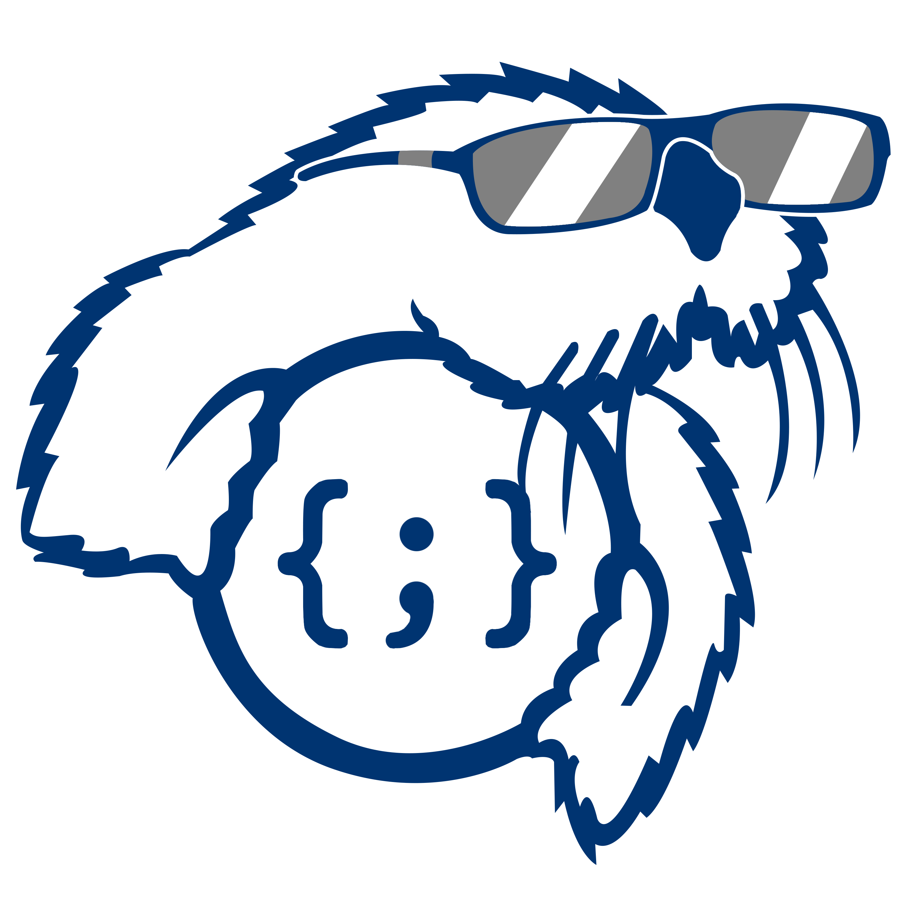

<mat-toolbar color="secondary" role="navigation">
  <mat-toolbar-row>
    <a routerLink="/"></a>
    <a mat-button routerLink="/">Monterey Bay Programming Team</a>
    <span class="spacer"></span>
    <button mat-button (click)="googleAuth()">Sign in with Google</button>
    <button mat-button (click)="openDialog()">Log In</button>
  </mat-toolbar-row>
</mat-toolbar>
